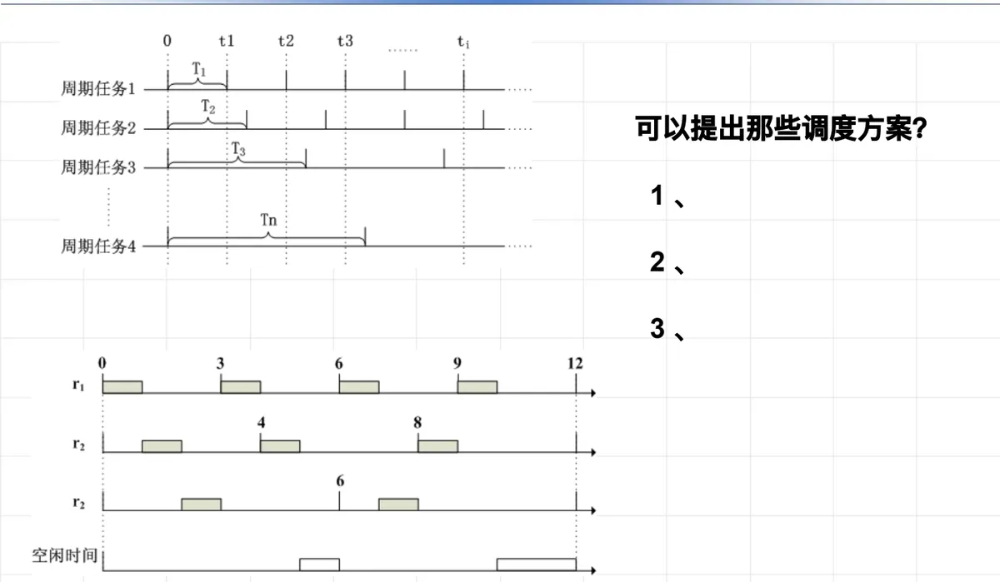
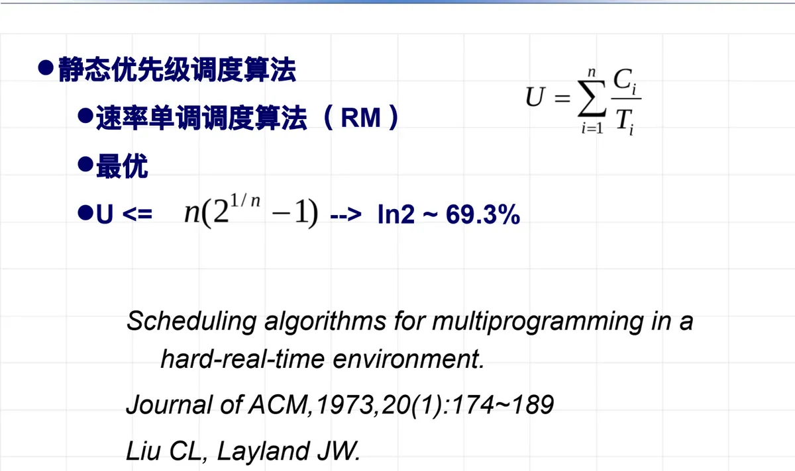

操作系统原理 · 第 1 章 绪论
1.3 操作系统的基本类型
上一节按时间顺序讲了操作系统是怎么长出来的，这一节换成按类型来看它的现状。三类系统各有各的立身之本：批量操作系统追求吞吐率，分时操作系统追求交互性，实时操作系统追求在截止期限之前完成。弄清了这三类的取舍，后面章节里那些具体的机制和策略才有落脚点。
1. 批量操作系统
批量操作系统把用户提交的程序组织成作业的形式：作业成批送入计算机，然后由作业调度程序自动选择作业，在系统内多道运行。早期的代表有 FMS（FORTRAN Monitor System），以及 IBM 7094 机上配备的 IBMSYS。
批量操作系统的特点是一优一劣，正好互为因果：
- 系统吞吐率高：靠三件事达成的——脱机操作（I/O 不占用主机）、多道运行（主存中同时放几道作业）、合理搭配作业（把 I/O 量大的作业与计算量大的作业搭配在一起）；
- 作业周转时间长，用户使用不方便：作业成批提交、排队等待，用户既不能在运行中干预，也拿不到及时反馈。这一条缺点，正是分时操作系统要解决的问题。
2. 分时操作系统
分时操作系统面向多个联机用户，一般采用时间片轮转的方式，把处理机时间轮流分配给各终端上的用户程序，使每个用户都感到自己在一台计算机上独占操作。它的特点是：
- 并行性：多个用户同时使用一台计算机，各自的作业在宏观上并行推进；
- 独占性：用户感觉自己独占了全机资源，察觉不到别的用户也在使用；
- 交互性：用户通过终端以会话方式与系统交互，可以随时输入命令、观察结果、调整下一步操作。
把这三条和批量操作系统对照：批量系统的长处是吞吐率高，短处是用户不方便；分时系统恰恰相反，用轮转与交互换来了良好的使用体验。
3. 实时操作系统
在计算机的发展过程中，还形成了一类特殊的系统：系统必须在一个给定的时间期限之前完成计算任务，否则就会发生灾难性的后果。这类系统通常是嵌入式系统，用于监视、响应和控制外部环境，比如生产制造、汽车控制系统、飞行控制、核能设备监控。对它们来说，计算的正确性不仅取决于程序的结果正确，也取决于结果产生的时间。配备在这类系统中的操作系统称为实时操作系统（RTOS，Real-Time Operating System）。
实时操作系统的特点有三条：
- 实时响应：对外部输入的实时信号，能够在规定的时间（截止期限，deadline）之内处理完毕并作出反应；
- 高可靠性和安全性：系统一旦失控后果严重，可靠性与安全性必须优先保证；
- 可预测性：实时系统采用各种算法和策略来保证行为可预测——不是「通常很快」，而是「最坏情况下也能按时完成」。
由此引出一个常见疑问：常用的个人计算机操作系统 Windows 为什么不是实时操作系统？回答要从两点入手：一是实时操作系统与非实时操作系统的区别——后者只追求平均意义上的快，不承诺最坏情况下的期限；二是实时系统必须能够理论证明其任务集合一定可调度，而不是靠实测「看起来来得及」。
（1）实时系统参考模型：硬实时周期任务
要谈「可证明」，就得先把任务模型写清楚。实时系统的参考模型是硬实时周期任务：某个计算任务以固定的时间间隔反复不断地执行，适用于确定性的工作负荷。描述这样一个任务需要三个参数：
- 周期 T：作业释放的固定时间间隔；
- 执行时间 C：作业的最大执行时间；
- 截止时间 D：作业必须在释放时间点之后多久完成。
于是一个硬实时周期任务的第 j 次执行，最迟必须在（j × T + D）时刻完成。一般情况下 0 < C < D = T，也就是说：第 j 次执行最迟必须在第 j + 1 次到来之前完成——上一份活没干完，下一份活就到期了，这就是「硬」字的含义。

模型给定之后，课件留下一个问题：针对这样的任务集合，可以提出哪些调度方案？下面两类算法就是回答。
（2）实时任务调度算法
静态优先级调度算法在系统运行前就把各任务的优先级定下来，运行中不再改变。其中的代表是速率单调调度算法（RM，Rate Monotonic）：任务周期越短（释放越频繁），优先级越高。RM 在静态优先级算法中是最优的，其可调度利用率上界为 U ≤ ln 2 ≈ 69.3%（n 个任务时精确上界为 n(21/n − 1)，随 n 增大趋于 ln 2）。原始出处是 Liu C L 与 Layland J W 的论文《Scheduling algorithms for multiprogramming in a hard-real-time environment》（Journal of the ACM，1973，20(1)：174–189）。

动态优先级调度算法的优先级在运行过程中随任务状态变化。其中的代表是最早截止期优先调度算法（EDF，Earliest Deadline First）：谁的截止期最近，谁先执行。EDF 在动态优先级算法中是最优的，可调度利用率上界提高到 U ≤ 100%。
两个上界的差别值得记住：RM 用固定的优先级换来实现简单、行为可预测，代价是浪费了一部分处理机能力；EDF 把处理机能力用得更满，但优先级频繁变化，实现与验证都更复杂。
本节小结
- 批量操作系统把用户程序组织成作业成批送入、多道运行，由作业调度程序自动选择作业；吞吐率高（脱机操作、多道运行、合理搭配作业），但作业周转时间长、用户使用不方便；代表系统有 FMS、IBMSYS；
- 分时操作系统面向联机用户，以时间片轮转使用户感到独占，特点是并行性、独占性、交互性；
- 实时操作系统（RTOS）必须在截止期限（deadline）之前完成任务，否则后果灾难性，多用于嵌入式环境的监视、响应与控制；特点是实时响应、高可靠性和安全性、可预测性；与 Windows 这类非实时系统的区别在于「能不能在最坏情况下守约」，而且必须能被理论证明；
- 硬实时周期任务用周期 T、执行时间 C、截止时间 D 三个参数描述，通常 0 < C < D = T，第 j 次执行必须在第 j + 1 次释放之前完成；
- 静态优先级算法以速率单调调度算法 RM 为代表（周期越短优先级越高，最优，U ≤ ln 2 ≈ 69.3%）；动态优先级算法以最早截止期优先算法 EDF 为代表（最优，U ≤ 100%）；两者都是「最优」，但最优的范围不同。